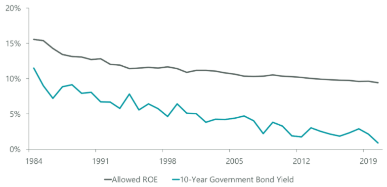
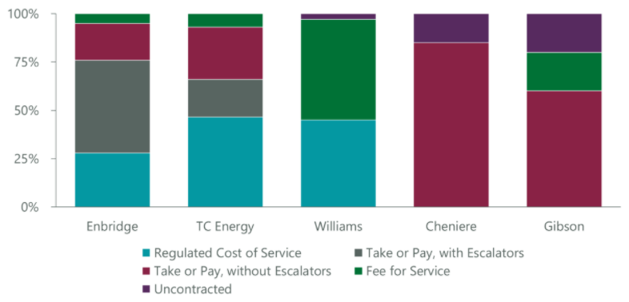
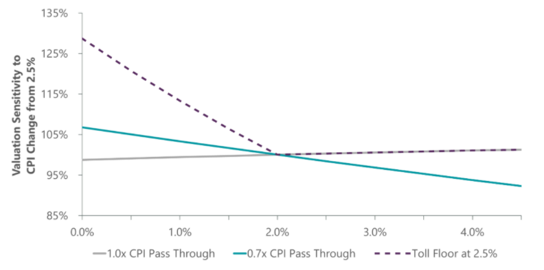
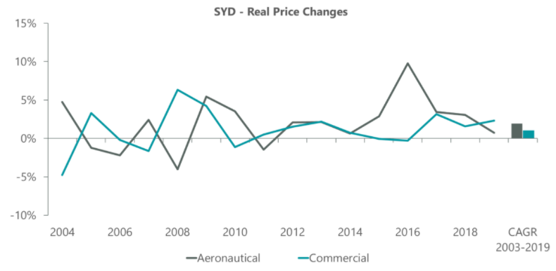
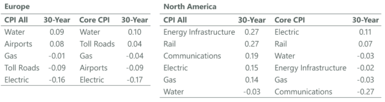

Inflation, Rising Rates and Their Impact on Infrastructure
Key Takeaways
- Rising rates and accompanying inflation will have little impact on valuations of regulated assets in the medium to longer term if inflation can be directly or indirectly passed through to customers.
- User-pays assets typically see cash flows increase if there is a cyclical upswing in growth and interest rates, with increasing valuations more than offsetting the impact of a rising cost of capital.
- There appears to be little to no correlation between various infrastructure assets and inflation over the past 30 years.
Following on from the COVID-19 pandemic in 2020, central banks and governments have aggressively stimulated their economies. The likely result of this aggressive stimulus is rising inflation and accelerating global growth. Investors need to prepare for a world of rising yields after a long period of structural decline. For infrastructure, in contrast to conventional wisdom, such a scenario need not be feared, but rather understood and managed. The impact of rising yields depends on whether they are in response to the cycle or whether they represent a more fundamental structural change. Different types of companies also react very differently.
The impact of rising rates depends on the reason for that increase. It also depends on the type of asset. We distinguish between:
- Regulated assets, where revenues are normally determined by a return on an underlying asset base, which is in turn determined by the level of investment. The details of the way in which returns are set vary widely between assets. The main difference, though, relates to whether prices and the assets are index linked, and cash returns based on a real cost of capital (with examples in the U.K., Australia), or whether the regulator looks at nominal assets and grants a nominal return.
- User-pays assets, where control of prices for transport assets is usually set out in a contract agreed at the time of grant of the concession, with volume risk (traffic, passenger, container, etc.) borne by the operator. Other infrastructure (e.g., communications) often has long-term contracts that include price escalation.
Regulated Assets
One of the most important characteristics of regulated assets is returns allowed by regulators will depend on how interest rates and the cost of capital develop in the future. If interest rates rise, in order to facilitate future funding of capital investment, regulators need to increase the allowed returns. Such increases do not happen immediately, and may not happen automatically, but there is a process by which over the medium term regulated returns should rise and fall in line with rises and falls in the cost of capital (which can be assumed to relate to interest rates). The precise way this is done differs between countries:
- In countries where there is a regular reset of prices (e.g., the U.K. and Australia), the regulator conducts a review of the appropriate cost of capital at the time of the reset and uses this in the price control determination. While the cost of capital determination may deviate (positively or negatively) from the underlying cost of capital, over time it can be expected to match investors’ required returns and directly pass through inflation.
- In other countries, companies need to apply for permission to increase rates (e.g., the U.S. and Canada). In these systems, the appropriate regulatory authority will also make an assessment of the cost of capital or cost of equity and use this in the determination. Again, changes in the cost of capital will in the medium term be reflected in the prices that the company can charge and so in essence these assets are also able to pass through higher costs that may occur from rising inflation.
The requirement for a regulator to offer reasonable returns is usually established in the legal framework supporting the operation of the utility or other asset owner. This means that:
- Investors can expect that changes in interest rates will be reflected in future cash flows over the medium and longer term. As a result, the underlying asset value at an assumed investment exit date in the medium term is likely to be relatively independent of interest rates. This is because any changes to the rate used to discount future cash flows will be offset by changes in cash flows set by the regulator.
- Changes in interest rates and inflation in the shorter term will have an impact on valuations of regulated utilities, and the impact will depend on the mechanism and timing by which changes in these variables are reflected in cash flows (or not).
In summary, rising rates and accompanying inflation will have little impact on valuations of regulated assets in the medium to longer term if inflation can be directly or indirectly passed through to customers.
User-Pay Assets
User-pays assets behave very differently from regulated utilities:
- They typically have greater exposure to GDP growth. Cash flows increase if there is a cyclical upswing in growth and interest rates, with increasing valuations more than offsetting the impact of a rising cost of capital.
- Their long-term cash flows for existing assets do not normally respond to changes in interest rates or the cost of capital. This means that valuations at an exit date respond negatively to increases in long-term interest rates. The negative impact will be higher the longer the duration of the asset.
- The behavior depends crucially on whether assets have returns linked to an inflation index. Under scenarios where growth increases, inflation increases, and real rates decline, index-linked assets will demonstrate strong positive returns. Assets not linked to an inflation index would underperform.
While rising rates due to increased growth expectations would be a positive to both user-pays assets and regulated utilities, what about rising inflation?
CASE STUDY 1: THE IMPACT OF INFLATION ON EUROPEAN UTILITIES
While regulations in different countries in Europe have various technical differences, in essence they are designed to protect the remunerations utilities receive for capital investment against macroeconomic changes, which include inflation.
Nonetheless, there is one major difference within the sector: whether allowed returns (i.e., the weighted average cost of capital or WACC) are set in nominal terms (as in Spain, Portugal, Czech Republic and Poland) or real terms (as in the U.K., Italy, Sweden and Hungary).
WACC and Allowed Return Set in Nominal Terms
If the WACC is set in nominal terms, the regulated asset base (RAB) and total capital and operating expenditure allowances are quoted by the regulator in nominal terms. Annual fluctuations in inflation have no impact on the allowed revenue.
Such companies are viewed as beneficiaries of low inflation: if inflation stays depressed, asset owners may be overcompensated in the regulated cash flows to cover cost inflation in capital and operating expenditures (due to allowances set in nominal terms), and vice versa, during the period.
However, the lower nominal bond yields resulting from a low inflation rate would be factored into the regulator’s return allowance in the next WACC review, and vice versa. For instance, for electricity networks in Spain, the nominal WACC allowance for 2020-26 is based on observations of nominal bond rates (which embody the inflation trend) over 2012-17 during the review process in 2018-19.
In other words, allowed returns allow for the pass-through of inflation, albeit with a time lag of a few years.
WACC and Allowed Return Set in Real Terms
If the WACC is set in real terms, parameters such as RAB and total capital and operating expenditures are typically estimated and approved by the regulator in real terms using forecast inflation for any regulatory period. The returns permitted by the regulator (allowed returns) are then adjusted annually by actual inflation when determining the regulatory cash flow and asset base, i.e., they are passed through to the customer through higher rates, maybe with a lag of a few months.
Consequently, if inflation in a given year within a regulatory period trends higher than the regulator’s forecast before the start of the period, there is a momentary boost to the cash flow compensation, and vice versa.
Such companies are viewed as beneficiaries of high inflation.
However, taking a more holistic view over the regulatory period, if high inflation sustains for multiple years, it is taken into consideration by the regulator’s assumption heading into the next price review, thereby driving down the real bond rate allowance embedded in the allowed return. The impact on the asset cash flows from inflation-related drivers gets averaged out over the long term.
In addition, companies may have mechanisms to further moderate the sensitivity to inflation, such as using inflation-linked bonds as part of their borrowings. The higher the proportion of debt being inflation-linked, the more muted the short-term effects from inflation shocks are on the cash flows.
CASE STUDY 2: THE IMPACT OF INFLATION ON NORTH AMERICAN UTILITIES
Fundamentally, North American utilities are insulated from rising or falling inflation because customer rates are regulated under a cost-of-service methodology. Under this model, utilities are not only able to earn a return on their invested capital (for example, investment in poles and wires), but they are also able to pass through expenses to the customer (for example, maintenance, taxes, fuel, etc.), subject to approval by the regulator. When there is inflation and costs are rising, utilities can file a rate case proceeding with the regulator to ask for customer bills to reflect the increase. However, what is crucial is that utilities increase their rates to customers at or around inflation over the medium to longer term.
One area where rising inflation may potentially benefit utilities is the impact on allowed returns. Assuming real interest rates are unchanged, higher inflation leads to higher nominal interest rates, which is the benchmark utility regulators refer to in determining a utility’s allowed return on equity (ROE). The higher the nominal interest rate, generally the higher allowed ROE. In some instances, the allowed ROE is formulaically tied to certain interest rate benchmarks. For example, Ameren’s Illinois electric utility has allowed ROEs that are annually adjusted to be 570 basis points (bps) above the 30-year U.S. Treasury rate. Another example is Edison International’s electric utility, where the 10.3% allowed ROE gets adjusted up or down if the Moody’s Bond Utility BAA Yield moves more than 100 bps over a rolling 12-month period.
Having said that, history shows that allowed ROEs have been quite sticky (Exhibit 1), and regulators have tended to be quite slow in adjusting the allowed ROEs in response to falling bond yields. As such, in a rising bond yield environment it is difficult to see regulators increasing ROEs until they believe asset owners are not being fairly compensated and funding future growth has become too expensive. As context, the industry average allowed ROE remains healthy in the 9%-10% range, despite years of falling rates. In an environment where there is a need to continue incentivising clean energy investments and strong public policy support, we expect ROEs to remain fairly sticky.
Exhibit 1: Allowed Returns Slow to Adjust to Falling Bond Yields

As of Dec. 31, 2020. Source: ClearBridge Investments, Bloomberg Finance.
CASE STUDY 3: THE IMPACT OF INFLATION ON NORTH AMERICAN PIPELINES
In the case of North American midstream pipelines, the impact of inflation varies depending on the nature of the commercial agreement that underpins pipeline assets (Exhibit 2).
Exhibit 2: Commercial Underpinning of Pipeline Assets

As of Feb. 28, 2021. Source: ClearBridge Investments, Bloomberg Finance.
Pipeline companies that operate long-haul transmission networks tend to have the highest level of inflation protection as they operate under a cost-of-service methodology or have long-term take-or-pay contracts with annual escalators embedded in their terms. For example, Enbridge’s Lakehead System (the U.S. portion of the Liquids Mainline System), has rates that are either indexed to PPI or cost-of-service, while the Canadian Mainline (the Canadian portion of the Liquids Mainline System) has tariffs that are a function of GDP. Enbridge’s gas transmission assets, such as the Texas Eastern network, have recently gone through a rate case to redetermine rates to reflect cost inflation, among other items, which resulted in an earnings uplift.
Those midstream assets that work under a fixed-fee take-or-pay contract (such as Gibson Energy’s oil sands storage tanks) or fee-for-service model (such as Williams’s gathering and processing infrastructure) are more exposed to inflation.
To the extent that higher inflation is a product of higher commodity prices, that would generally be positive for midstream companies from the following perspectives:
- Higher commodity prices mean healthier E&P counterparties/customers.
- Higher prices may lead to more E&P activity, which may mean more infrastructure/growth capex is required.
- Midstream companies that have non-contracted volumes/marketing arms benefit directly by selling product at higher prices.
CASE STUDY 4: THE IMPACT OF INFLATION ON NORTH AMERICAN RENEWABLES
Overall inflationary forces have muted valuation impact on global renewables. While renewables companies are largely being compensated through 10-year-20-year fixed power purchase prices or partially inflating agreements, the returns assumed within these agreements tend to have long-term inflation assumptions embedded. Essentially, this means that while there is no explicit pass-through of inflation through the pricing, a pass-through is implicit when the contract is written and more often than not the contract will contain buffers for instances like rising inflation. For example, renewables companies secure growth from their development pipelines, where fixed-price contracts for the operational stage of assets are negotiated based on current market conditions.
Meanwhile, technology is driving cost deflation, preserving or expanding margins for renewables companies. Automation and software have translated to lowering operations and maintenance costs (the largest contributors to costs), and companies largely expect technology to continue to bring costs down. Bloomberg New Energy Finance forecasts capital costs in renewable energy to continue to come down through 2050. For example, solar photovoltaics are expected to see an annualised 3% decline through 2030.
CASE STUDY 5: THE IMPACT OF INFLATION ON TOLL ROADS
Rights to operate toll roads are typically granted under a concession and as such usually have a finite life. Concession deeds define the parameters under which the toll road may operate, and, in most cases, this stipulates how toll prices may be increased. Generally, toll price increases are linked to inflation; however, there are a number of variations, including:
- Full inflation pass-through (e.g., the Westlink M7 in Sydney)
- Partial inflation pass-through (e.g., main French and Italian toll roads’ usual 0.7x CPI)
- Inflation pass-through with a floor (e.g., WestConnex in Sydney has greater of CPI or 4% until 2040)
- No inflation linkage (e.g., 407 ETR in Toronto and I-95 in Virginia are free to set tolls subject to constraints)
Here we illustrate the sensitivity of toll road valuations to changes in inflation according to different pass-through scenarios (Exhibit 3).
Exhibit 3: Valuation Sensitivity of Toll Roads to Inflation

As of Feb. 28, 2021. Source: ClearBridge Investments, Bloomberg Finance. Assumes real rates remain constant and inflation change impacts nominal bond rates.
The differences in inflation pass-throughs outlined above tend to drive the following outcomes:
- Full inflation pass-through will lead to limited sensitivity.
- Partial inflation pass-through will lead to increased sensitivity, albeit costs are typically fixed and increase with inflation, providing for improving EBITDA margins with traffic growth (historically this is why partial inflation pass-through exists, as inflation is achieved after costs).
- Floor price increases mean valuations are sensitive below the inflation floor. When inflation is decreasing, valuation increases and vice versa.
- Concessions with no inflation linkage will typically mean valuations are affected more by traffic congestion and thus economic conditions.
As such, inflation is typically passed through, making toll road valuations less sensitive to nominal bond rate changes where this is driven by increases in inflation. Toll road valuations are, however, very sensitive to changes in real bond rates without an increase in inflation, thus increasing discount rates without the benefit of inflation-driven increases in cash flows.
It is also worth noting that, often, inflation occurs at times of increased economic activity, which typically results in increased traffic levels, further offsetting impacts of inflation from a valuation perspective.
CASE STUDY 6: THE IMPACT OF INFLATION ON AIRPORTS
Airports are typically regulated to some degree, and as such inflation sensitivity somewhat depends on the regulatory model of the airport. Most airports are dual-till, where aeronautical activities are regulated and non-aeronautical activities (sometimes referred to as commercial activities) are not.
Exhibit 4: Dual-Till Regulation for Airports
In general, both revenue streams can pass through inflation increases, although how this occurs varies:
- Aeronautical: Typically, regulators set an allowed return that regulated airport activities can earn. This allowed return is usually set for a period of five years and includes an estimate of inflation. Increases or decreases in the outlook for inflation are incorporated at the next five-year reset and flow through into regulated prices. Additionally, when setting prices for five years, price increases are often set as CPI+x, meaning prices are adjusted each year with inflation. As such, aeronautical activities can be exposed to inflation risk for up to five years, but in many cases have inflation linkages in actual pricing decisions.
- Non-aeronautical: Commercial revenues are usually negotiated between airports and customers. As such, short-term exposure to inflation is often dictated by contractual terms, while longer-term exposure is dictated by bargaining power. Historically airport revenues have been able to achieve inflation via passenger increases on passenger-related activities such as retail and parking. Property revenue increases have often been above inflation given the scarce nature of airport land.
Many other factors also influence an airport’s ability to pass on price increases, including:
- Passenger Mix: Increases in high-spending passenger groups such as Chinese tourists influence revenue outcomes.
- Foreign Exchange (FX) Rates: This is typically passed through immediately in short-term spending rates as most travelers have a budget in their home currency and their spending adjusts immediately with changes in FX. FX rates are often influenced by the relevant country bond rate expectations, which are also influenced by inflation.
- Passenger Volume: The other key consideration in an airport’s ability to pass on inflation effects is passenger volumes, given that most revenue streams reflect the number of passengers multiplied by price. As such, ticket price changes can have effects on travel affordability and thus passenger numbers. Over the last 50 years, airline ticket prices have fallen in real terms often in combination with increases in disposable income, stimulating travel demand. To the extent airline ticket price trends change, this will also have an impact on headline revenue.
Using Sydney Airports as an example, the real price change in commercial activities has increased by 1.1% annually since 2003, while aeronautical has increased by 1.9% annually over the same period (Exhibit 5).
Exhibit 5: Dual-Till Airports Can Pass Through Inflation

As of Feb. 28, 2021. Source: ClearBridge Investments, Bloomberg Finance.
The Response of Listed Infrastructure Equities to Inflation
Using North America and Europe as a case study, we have gone back 30 years and looked at the correlation of infrastructure assets to both core and headline inflation. Unsurprisingly and as we have discussed above, correlations have little, if any, linear relationship.1
Exhibit 6: Little Correlation Between Inflation and Infrastructure Share Prices

As of Feb. 28, 2021. Source: ClearBridge Investments.
Growth-Driven Rising Rates a Boon for Infrastructure, While Inflation is a Pass-Through
A look at how the effects of rising interest rates and inflation on infrastructure assets shows that while rising rates due to increased growth expectations would have a positive impact on both utility and user-pays assets, rising inflation has been an ongoing concern for the market. What is clear from the above analysis is that inflation is a pass-through, directly or indirectly, for infrastructure assets and so will have a limited impact on valuations. Moreover, looking at correlations of various infrastructure assets to inflation over the past 30 years, there appears to be little to no relationship.

Related Perspectives

Valuation of Infrastructure Assets Q4 2022
In our latest Valuation update, Portfolio Manager Daniel Chu outlines the main drivers of infrastructure returns in the fourth quarter of 2022 and weighs in on the factors impacting different infrastructure sectors across the globe.
Read full article